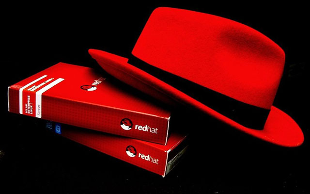

Aprendendo Openstack
A RedHat tem sido uma das empresas que mais investe no projeto openstack sendo um de seus principais vendors no Mundo, seu treinamento oficial possui um módulo gratuito que pode ser acessado fazendo um cadastro a partir do endereço abaixo
Acesse o Curso